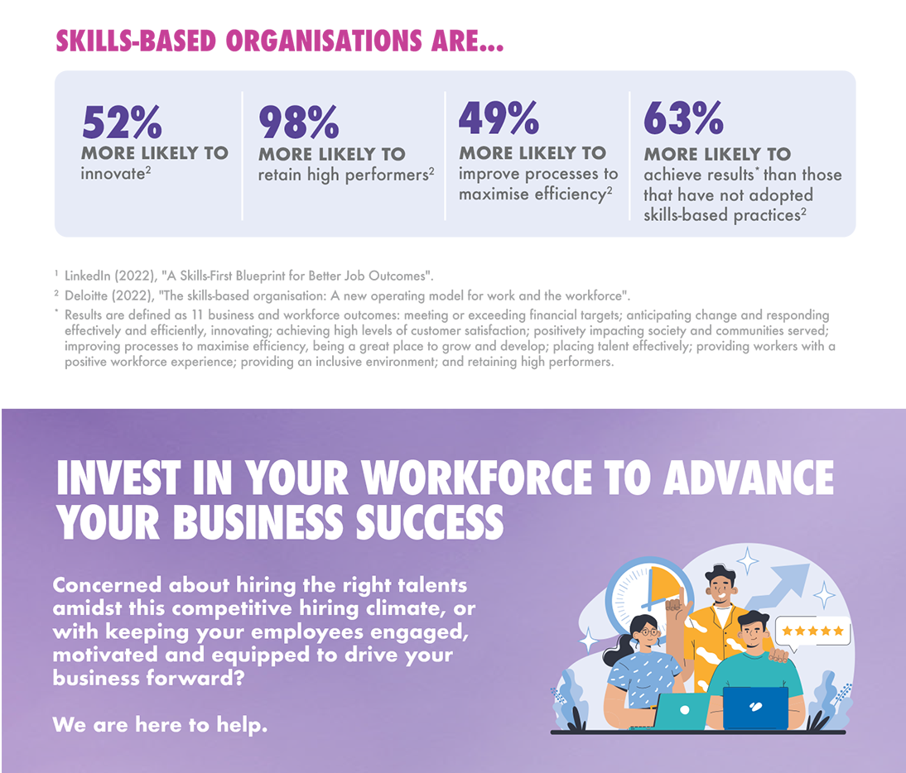

Beyond addressing immediate talent gaps, skills-based approach to hiring has long-term benefit for everyone. Business owners can align hiring practices with actual organisational needs, ensuring resources are spent on candidates who can deliver measurable value.

DRIVING TALENT ACQUISITION AND RETENTION
Adopting skills-first hiring will broaden your talent pool and bridge talent gaps for that competitive edge in today's labour market. As a business owner, how can you practice skills-based hiring? Find out the programmes available here.
MyCareersFuture
As an employer, you can streamline skills-first hiring through MyCareersFuture's Talent Search and Suggested Talent tools. You can identify and reach out to candidates with the relevant skill sets, who haven't applied directly to these jobs.
Mid-Career Pathways Programme
Come onboard as a host organisation to take on experienced mid-career individuals on attachments, while receiving 70% funding for their training allowance.
Career Conversion Programme (Place-and-Train)
You can identify potential candidates and reskill them through On-the-Job Training (OJT) or industry-recognised training to move to a new growth job role. Up to 90% of salary support will be provided, long-term employed or jobseekers aged 40 and above will be eligible for higher funding support.
CULTIVATING A FUTURE-READY AND COMPETITIVE WORKFORCE
As industries evolve and new technologies emerge in the wake of digitalisation, your business success will hinge on a workforce that is agile and adaptable to the acquiring new skills. Proactively investing in cultivating a culture of continuous learning and reskilling will be beneficial for the career progression of your employees and your business success. Here are some programmes to consider.
Support for Job Redesign under Productivity Solutions Grant (PSG-JR)
Collaborating with a pre-approved Job Redesign consultant, you will work together to implement customised solutions to redesign job roles, work processes, tasks and responsibilities with funding support of up to $30,000. This will ease you into embarking on your business and workforce transformation.
Jobs Transformation Maps
Working with government agencies and industry partners, we have developed Jobs Transformation Maps to provide insights on the impact of technology and automation to jobs across industries. With this knowledge, you can help your workforce adapt through job redesign and reskilling.
Career Conversion Programme (Job Redesign Reskilling)
Maximise the potential of your workforce when you reskill them for new or redesigned roles through OJT training. Salary support of up to 90% will be provided during this transitional period. Mature employees aged 40 and above will receive a higher fund support.